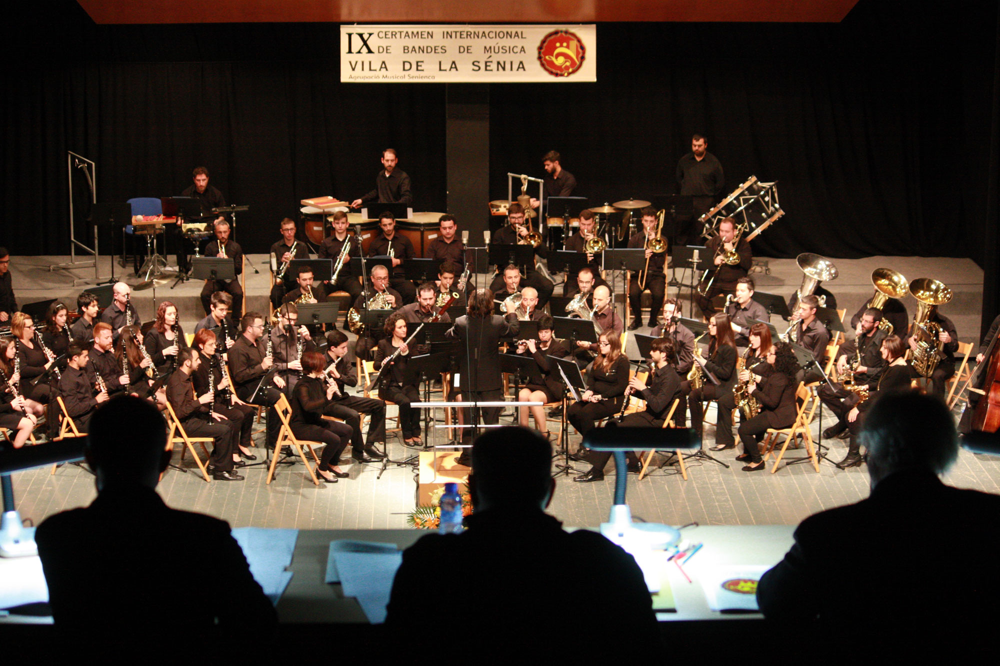
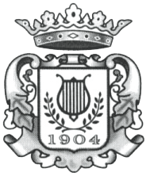
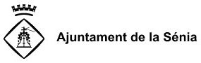

LA SÉNIA · CATALUNYA
El Certamen
Gairebé vint anys compartint música.
ELS ORÍGENS · 2007
Una història escrita amb música
El Certamen Internacional de Bandes de Música Vila de la Sénia va néixer l'any 2007 amb la voluntat de crear un espai de trobada per a les bandes de música.
Els primers anys van estar marcats per una gran participació: el Certamen va arribar a comptar amb tres categories i va reunir bandes de procedències diverses, especialment de la Comunitat Valenciana, Castella-la Manxa, Galícia i Portugal.
Sota l'impuls del mestre José Rafael Pascual Vilaplana i la direcció musical de Pep Vila, el projecte va comptar amb jurats de reconegut prestigi internacional i es va consolidar com una cita anual dins del món de les bandes de música.

EL PRESENT
Mantenim viva la flama
Amb el pas dels anys, el Certamen va continuar sent un punt de trobada per a bandes que venien a la Sénia a compartir la seva música i viure una experiència que anava més enllà de les actuacions sobre l'escenari.
La pandèmia de la COVID-19 va suposar un punt d'inflexió. La recuperació no ha estat fàcil i, en algunes edicions posteriors, la manca de bandes inscrites ha impedit celebrar el Certamen en el seu format competitiu.
Avui continuem treballant per mantenir viva la flama d'aquell projecte que va començar el 2007: compartir música, acollir bandes vingudes d'arreu i preservar un espai de trobada que forma part de la història musical de la Sénia.
Perquè el Certamen és, sobretot, la música i les persones que el fan possible.
QUI EL FA POSSIBLE
Un projecte fet des de la Sénia
El Certamen està organitzat per l'Agrupació Musical Senienca, amb el patrocini de l'Ajuntament de la Sénia, la Diputació de Tarragona i la Generalitat de Catalunya, i la col·laboració d'empreses de la Sénia.
Organitza

Agrupació Musical SeniencaAmb el patrocini de

Empreses col·laboradores
Espai reservat per als logotips de les empreses col·laboradores de la Sénia.
LA NOSTRA HISTÒRIA
Descobreix les edicions anteriors
Bandes participants, programes i resultats al llarg dels anys.